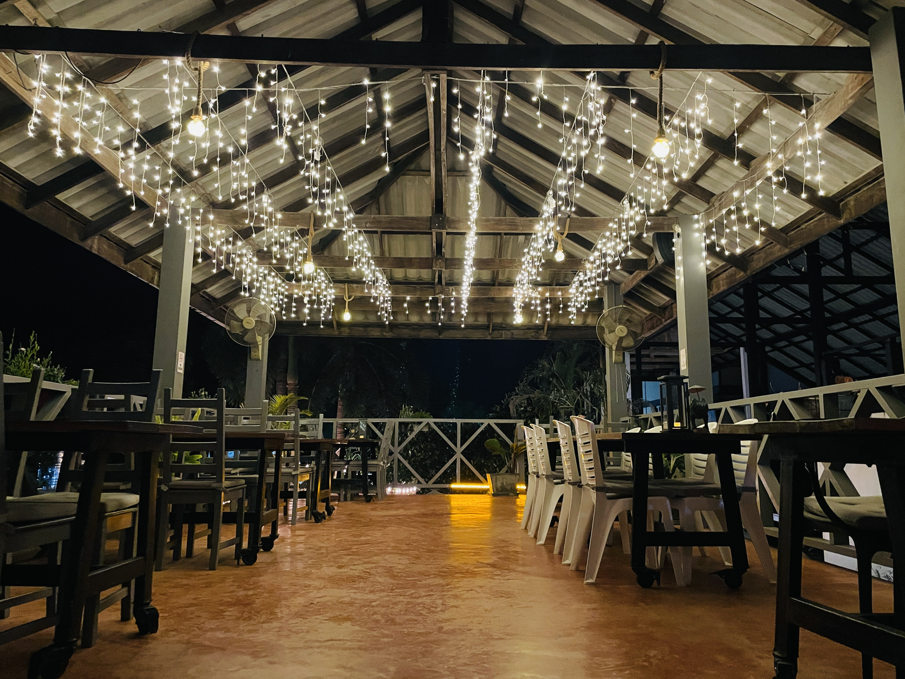
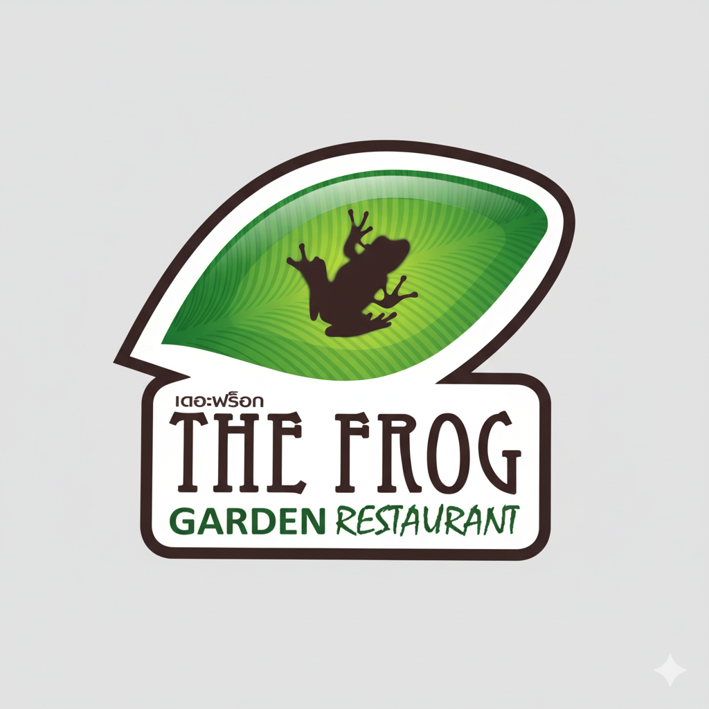
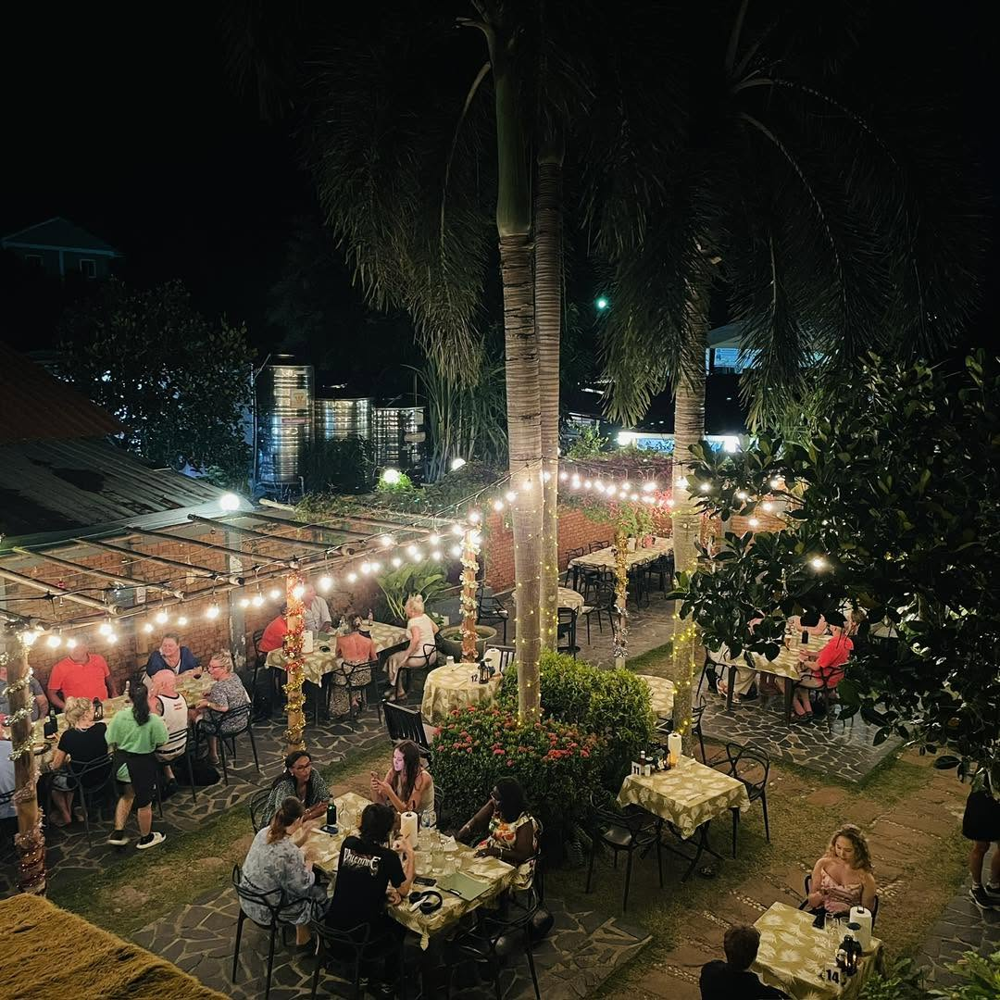

Wine & dine garden
A hidden gem inside the restaurant
Lush greenery, soft lighting, and a calm setting for a slow island dinner.

The Frog BookWine bar and restaurant in Saladan Village
A lush garden hideaway on Koh Lanta for fine wine, relaxed dining, and warm evenings under the island sky. Välkommen to one of Saladan's most charming dinner spots.
Since 2008
The Frog opened on Koh Lanta in November 2008 and has become a romantic, comfortable venue for dinner, wine, and after-dinner drinks. Guests can choose between the garden, the veranda, and the music lounge.

Wine and dine
The kitchen revises the menu often, keeping familiar favourites alongside new specials for visitors who come back to Koh Lanta year after year.

Lush greenery, soft lighting, and a calm setting for a slow island dinner.

A spacious place for couples, friends, and families before or after sunset.
Settle in for refreshments, conversation, and an easy end to the evening.
Inside The Frog
Step inside the warm lights, music, garden tables, and relaxed island mood of The Frog.
The Frog wine collection
The Frog's wine cellar holds up to eight hundred bottles from over twelve countries, with around seventy choices across red and white wines. Enjoy a bottle with dinner or purchase wine after 5pm to take back to your resort.
For Swedish guests
The Frog has long welcomed Swedish travellers and international guests. The team speaks English, Thai, and some Swedish, making dinner easy for holiday families and returning friends.
Visit
Opening hours are 5pm to 10pm, seven days a week. For reservations and private functions, contact the restaurant by phone, Instagram, Facebook, or Google Maps.